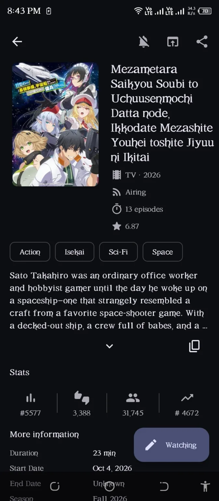
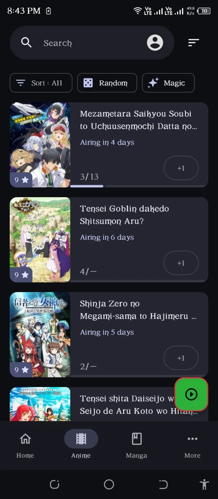
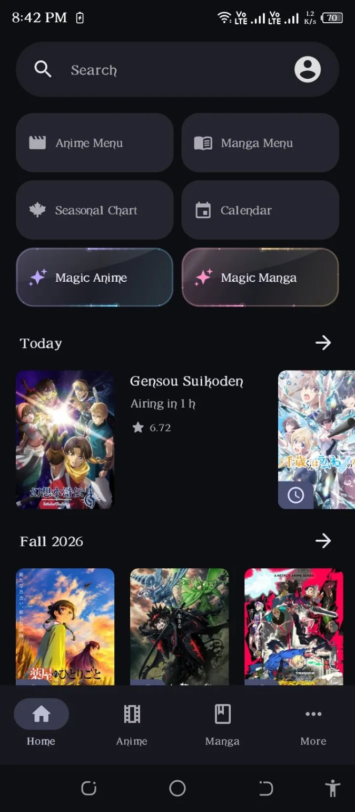
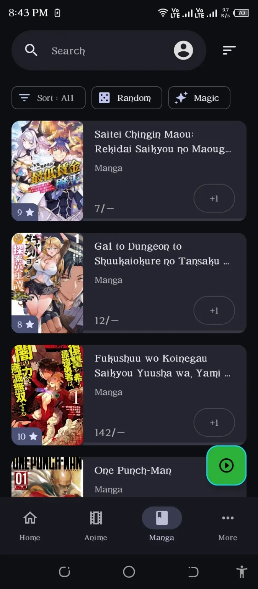
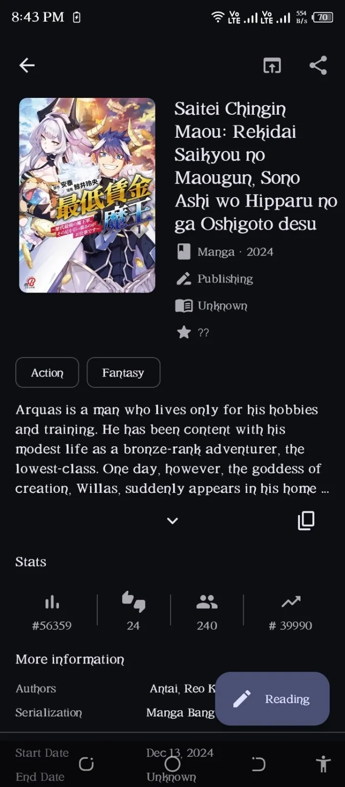
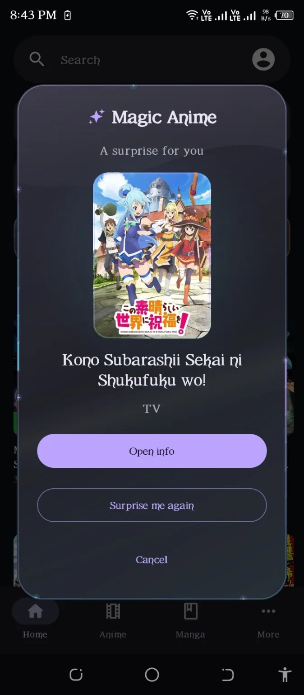
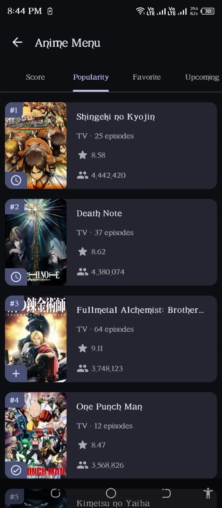
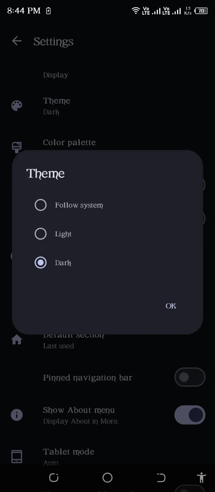

ANIME
Track Anime
Beautifully.
Urus status, episod, skor dan lihat maklumat anime dengan paparan yang kemas.

Anime yang kau tonton. Manga yang kau baca. Semua dalam satu tempat, dengan MyAnimeList di sisi kau.



Daripada progress episod hingga chapter manga, semuanya lebih senang diurus.
Urus status, episod, skor dan lihat maklumat anime dengan paparan yang kemas.

Ikut progress bacaan dan simpan semua manga kegemaran di dalam senarai MAL.

Tidak tahu mau tengok atau baca apa? Tekan Magic untuk cari anime atau manga secara rawak. Mana tahu jumpa cerita kegemaran baru!
See it in action
Terokai anime melalui score, popularity, favorites, dan upcoming releases.

Pilih light, dark, atau ikut theme sistem — ikut citarasa kau.

Swipe atau tekan screenshot untuk buka paparan penuh.
Download KirinMaL untuk Android terus daripada GitHub Releases. iOS dan Desktop masih dalam perancangan.